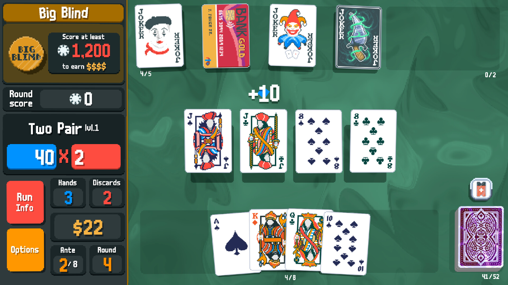

GameZone


En un año de lanzamientos cargados de títulos ambiciosos con grandes presupuestos, ‘Balatro’ ha surgido como una sorpresa arrolladora, ganando un lugar entre los nominados a Juego del Año en los The Game Awards 2024. Este fenómeno, creado por el solitario desarrollador LocalThunk, ha desatado una revolución entre crítica y los jugadores gracias a su mezcla de mecánicas roguelite y póquer. Pero, ¿qué hace que 'Balatro' sea tan especial, y por qué ha sido considerado uno de los mejores juegos de este año?
El viaje de ‘Balatro’ comenzó de manera humilde, cuando un desarrollador canadiense, conocido solo por su alias LocalThunk, decidió evolucionar sus proyectos previos en un nuevo concepto: una versión de Big Two (un popular juego de cartas cantonés) que fusiona mecánicas de póquer con un enfoque roguelike. Inspirado por el éxito de títulos como ‘Luck Be a Landlord’, LocalThunk transformó su idea en un formato que, sin grandes estrategias de marketing, se convertiría en un éxito instantáneo. Lo que parecía una pequeña joya rápidamente atrajo la atención de grandes masas de usuarios por su adictiva jugabilidad.
En ‘Balatro’, los jugadores se enfrentan a la tarea de construir una mano de cartas utilizando las tradicionales combinaciones de póquer, como parejas, tríos y escaleras. Sin embargo, lo que realmente lo distingue de otros juegos de cartas es la posibilidad de modificar los de la baraja mediante comodines y naipes especiales. Estas no solo alteran el curso del juego, sino que permiten multiplicar las fichas y aplicar modificadores que cambian las reglas en tiempo real. A medida que los jugadores avanzan, se enfrentan a una serie de jefes, cada uno con una debilidad o fortaleza contra un palo determinado en el mazo. La mecánica de los jefes, aunque simple, requiere que el jugador adapte su estrategia y considere cuidadosamente las combinaciones. El formato combina así la toma de decisiones estratégica con la incertidumbre del azar, creando una experiencia realmente adictiva.
Lo que convierte a ‘Balatro’ en un juego que engancha es su sistema roguelike. Cada partida ofrece una nueva oportunidad para mejorar y probar estrategias. Tras cada ronda, los jugadores tienen acceso a una tienda donde pueden comprar cartas especiales y mejoras aleatorias que remodelan su mazo. Esta progresión, combinada con el sistema de multiplicadores de puntos, asegura que cada sesión sea única. El hecho de que las cartas y las mejoras se elijan de manera aleatoria genera una sensación de constante inquietud, donde el jugador nunca sabe exactamente qué puede esperar, pero siempre está ansioso por volver a intentarlo.El sistema de progreso en ‘Balatro’ no se limita a obtener nuevas cartas, sino que va más allá. Cada victoria y cada derrota afectan al desarrollo del mazo, ofreciendo nuevas cartas o potenciadores que alteran la dinámica del juego. Este ciclo de crecimiento y evolución permite mejorar el mazo y nuestro rendimiento en cada partida. Este ciclo de “intento y error” está imbuido en la esencia misma del juego, dando forma a una experiencia increíblemente adictiva. “Solo una mano más”, es una frase que se repite entre los jugadores, y es fácil descubrir por qué. La simple jugabilidad se transforma en algo adictivo, que nos mantiene en una constante búsqueda de nuevas combinaciones y estrategias que permitan superar los retos del juego.